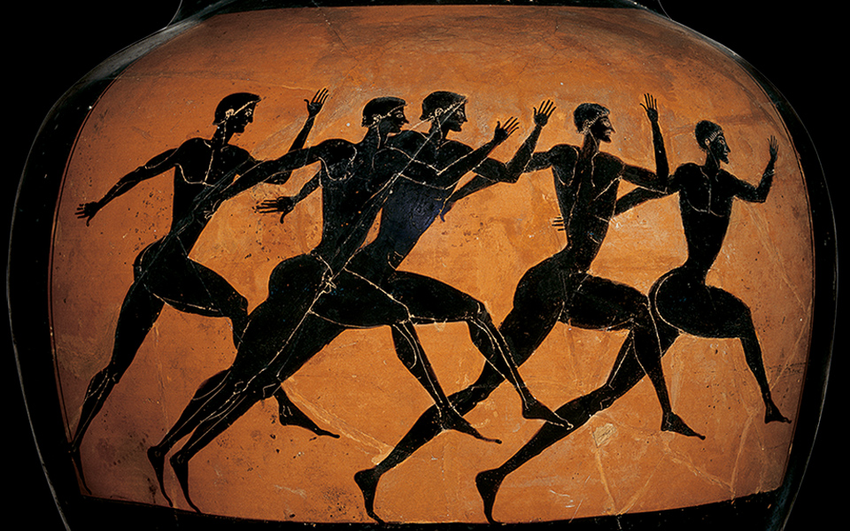

Krótka historia siłowni
Święta to czas równości. W ubogim żłobie rodzi się Zbawiciel, a biedni, bogaci, młodzi i starzy ocierają się o siebie w centrach handlowych, razem stoją w korkach ulicznych i przy tych samych wigilijnych stołach spożywają pochodne karpia, maku i kapusty. A potem, kiedy duch Świąt powoli mija, a kalorie zostają, wszyscy spotykają się jeszcze raz - tym razem w zaciszu osiedlowej siłowni, gdzie ramię w ramię biegają na stepperach, ćwiczą na aerobach i pedałują na stacjonarnych rowerkach.
Egalitaryzm tego dziwnego miejsca nie ogranicza się zresztą do przełomu grudnia i stycznia. Na siłowniach przez okrągły rok można spotkać całkiem reprezentatywną próbkę populacji – karnety do fitness clubów od dawna mają już nie tylko kulturyści, ale też biznesmeni, licealiści, młode matki i gospodynie domowe. Siłownia stała się naturalną częścią życia dla tak wielu z nas, że nie zastanawiamy się już nad uderzającą sztucznością takiej formy aktywności. A przecież ćwiczenie dla samego ćwiczenia, w całkowitej izolacji od innych, a w dodatku pozbawione elementu rywalizacji, widowiska czy nawet rekreacji, to prawdziwy fenomen wśród innych sportów.
Ale od początku. Pierwowzorem dzisiejszych siłowni były oczywiście starogreckie gimnazjony, gdzie nadzy młodzieńcy kształtować mieli jednocześnie swoje ciała i umysły, ale instytucja sal sportowych na przestrzeni historii była raczej ewenementem. Wcześniej, naszym dalekim przodkom za dostateczny trening służyło polowanie i zbieranie jagód, nie wspominając już o przymusowych ucieczkach przed drapieżnikami. Później, choćby w średniowieczu i renesansie, ruch fizyczny był nieodłączną składową gospodarskich obowiązków. Dlatego, właściwie aż do XIX wieku wszelkie sale do ćwiczeń miały rację bytu wyłącznie w ramach instytucji wychowawczych. Pierwszym odstępstwem od tej normy były lata 30. XX wieku, kiedy to w Stanach Zjednoczonych popularne stały się salki treningowe dla bokserów i zapaśników, takie jak Gramercy Gym Cusa D’Amanto na Manhattanie.
Idea aktywności fizycznej wśród osób zawodowo niezwiązanych ze sportem narodziła się jednak znacznie później. Jak podkreślają Lance Dalleck i Len Kravitz, autorzy opracowania "The History of Fitness", swoje dzisiejsze zamiłowanie do sportu zawdzięczamy w dużej mierze dwóm amerykańskim prezydentom – Theodorowi Rooseveltowi i Johnowi F. Kennedy'emu. Ten pierwszy zainspirował świat opowieścią o tym, jak w dzieciństwie pokonał astmę dzięki rygorystycznym ćwiczeniom fizycznym. Temu drugiemu słaba kondycja rodaków tak bardzo leżała na sercu, że napisał dla "Sports Illustrated" artykuł "The Soft American" (ang. miękki Amerykanin), w którym nawoływał, by zamiast oglądać sport w telewizji, zaczęli sami go uprawiać. "Fizyczna doskonałość jest podstawą każdej innej formy doskonałości", mówił prezydent, a jego słowa stały się niewyrażonym mottem ducha fitnessu.
"Fitness to coś więcej, niż dobry wygląd, fitness pozytywnie wpływa na nasze zdrowie, dobrostan, jakość życia i obraz siebie", ten nafaszerowany pojęciami z popularnej psychologii tekst, który przeczytać można na stronie znanego trenera Keliego Robertsa, powinien chyba skłonić nas do pytania, czy w swojej pogoni za wysportowanym ciałem nie zapędziliśmy się odrobinę za daleko. W końcu siłownia to tylko siłownia, a sprawne mięśnie chyba nie są warunkiem wartościowego życia. I chyba nie powinny być.